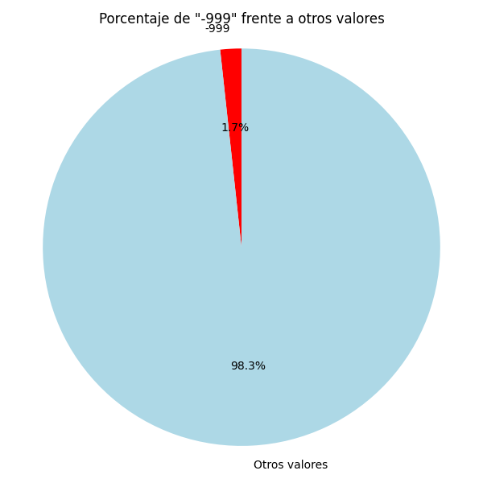
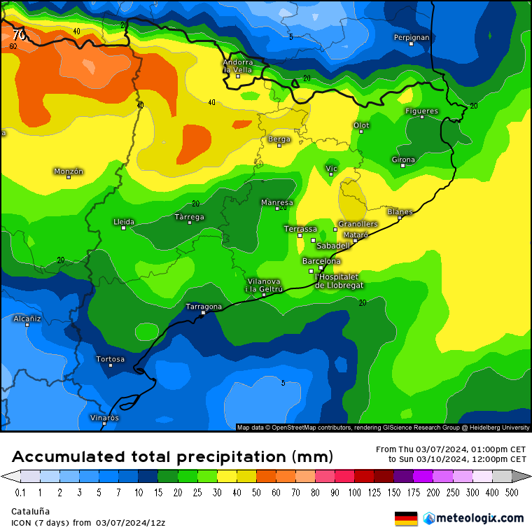
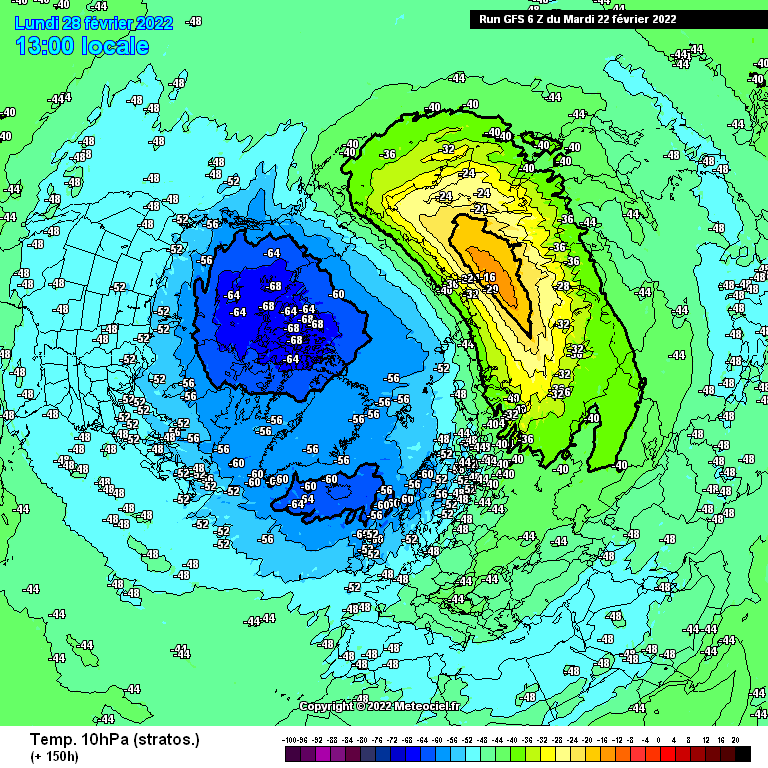
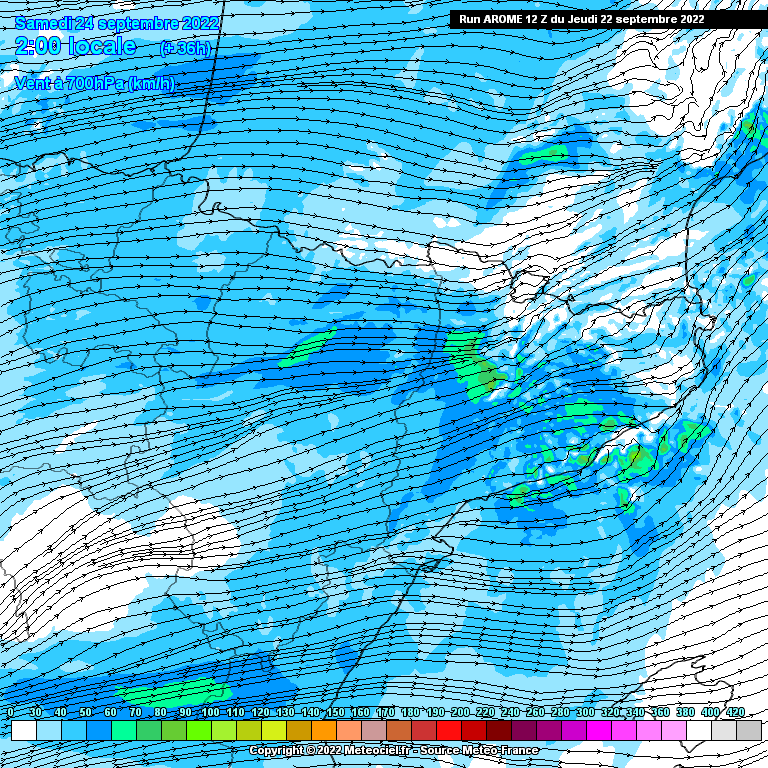
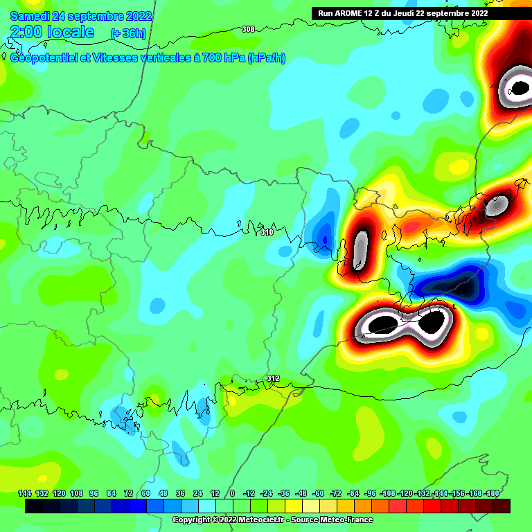

Porcentaje de datos restantes (-999)
Ejercicio 1. Script para calcular el porcentaje de dates faltantes (-999)
Ver más detalles
Media precipitaciones anual
Ejercicio 2. Script que muestra la precipitación total y media por año.
Ver más detalles

Total precipitaciones anual
Ejercicio 3. Script que muestra la precipitación total y media por año.
Ver más detalles

Tendencia de cambio
Ejercicio 4. Script que calcula la tasa de variación anual de las precipitaciones.
Ver más detalles

Índice de estacionalidad
Ejercicio 5. Script que analiza la variación predecible de las precipitaciones.
Ver más detalles

Duración máxima sequías
Ejercicio 6. Script que analiza la duración máxima de las sequías.
Ver más detalles